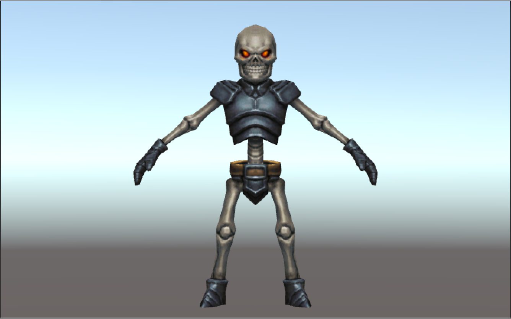
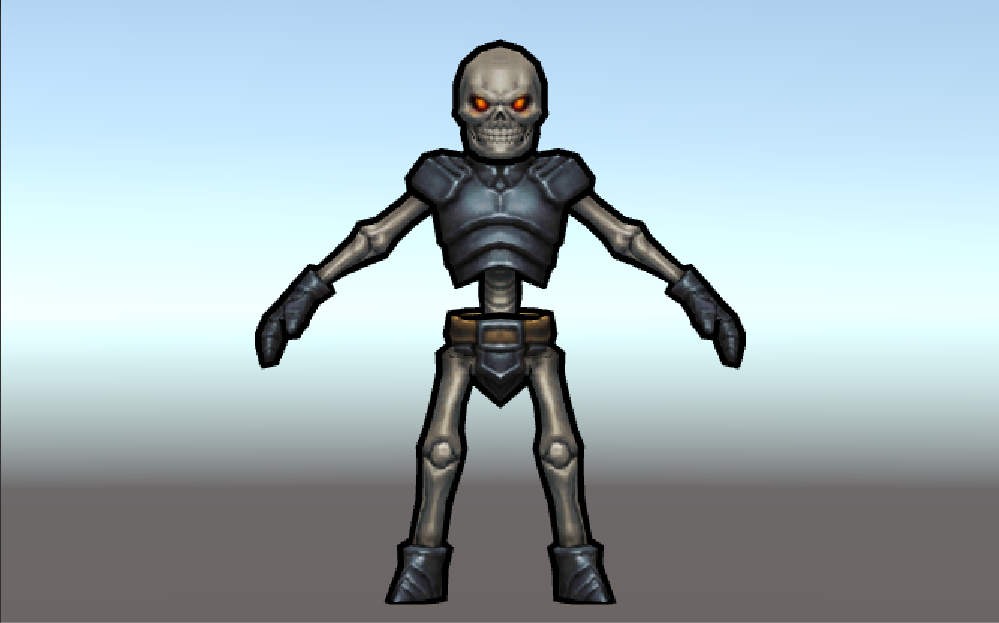
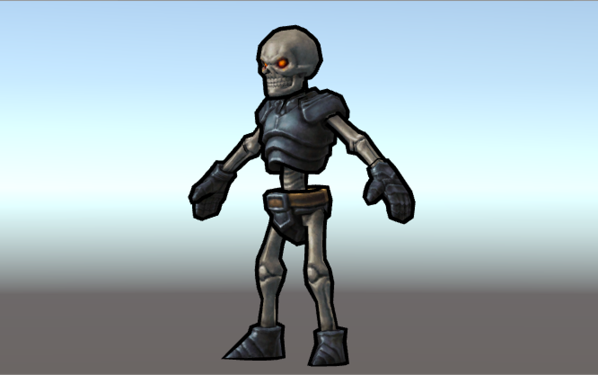
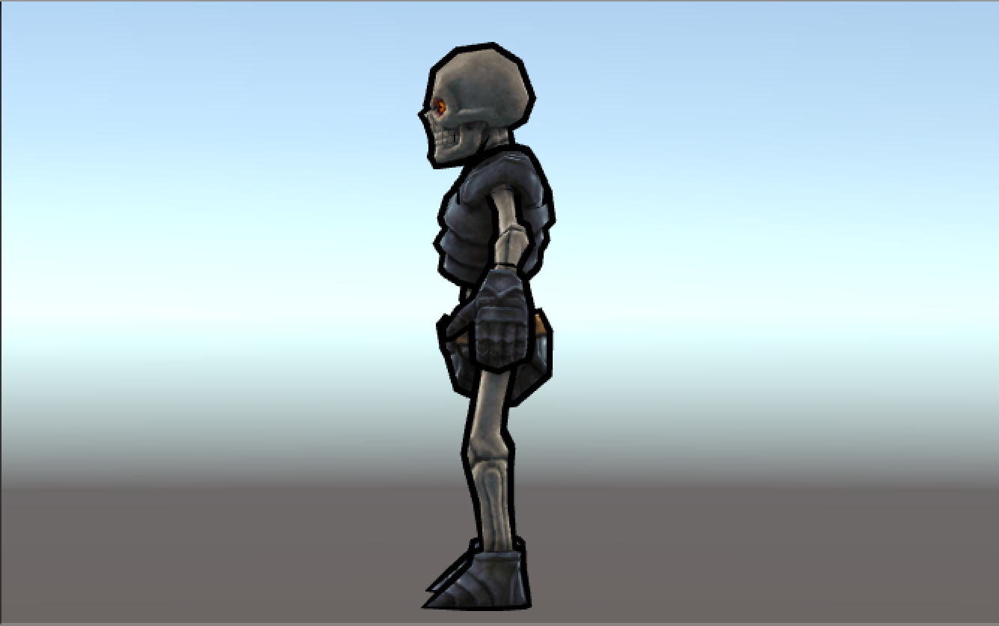
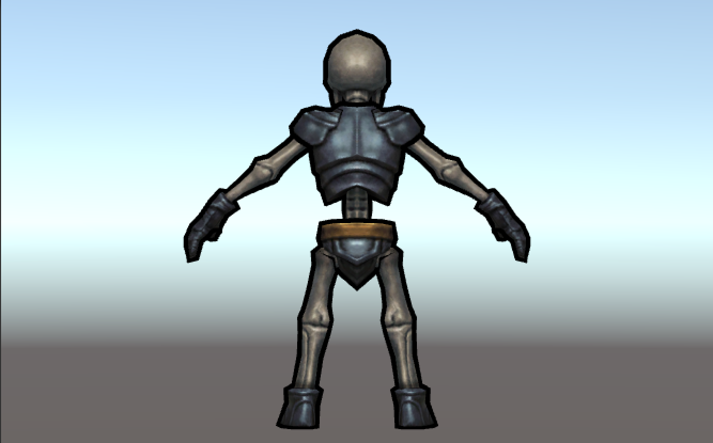

這次寫了一個簡單的外輪廓效果
這個效果在遊戲中常常應用在：選取物件、卡通風格
Shader "Unlit/Outline Shader"
{
Properties
{
_MainTex ("Base (RGB)", 2D) = "white" { }
_OutlineColor ("Outline Color", Color) = (0, 0, 0, 1)
_OutlineWidth ("Outline width", Range (0.0, 1.0)) = .005
}
SubShader
{
Pass
{
Cull front
CGPROGRAM
#pragma vertex vert
#pragma fragment frag
#include "UnityCG.cginc"
struct appdata
{
float4 vertex : POSITION;
float3 normal : NORMAL;
};
struct v2f
{
float4 pos : POSITION;
};
uniform float _OutlineWidth;
uniform float4 _OutlineColor;
v2f vert(appdata v)
{
v2f o;
float3 norm = normalize(v.normal);
v.vertex.xyz += v.normal * _OutlineWidth;
o.pos = mul(UNITY_MATRIX_MVP, v.vertex);
return o;
}
half4 frag(v2f i) : COLOR
{
return _OutlineColor;
}
ENDCG
}
Pass
{
SetTexture [_MainTex]
{
Combine Primary * Texture
}
}
}
}主要的實作是在第一個 Pass 通道中
Cull front 是用來剔除面向鏡頭方向的多邊形
只顯示背對鏡頭的多邊形
而在 vert 中
動態改變模型的 vertex 座標
並畫上 _OutlineColor
來達到模擬模型輪廓的效果
接著在第二個 Pass 通道中
利用簡單的 Fixed Pipeline
來進行模型貼圖的繪製
原始效果

Shader 效果



